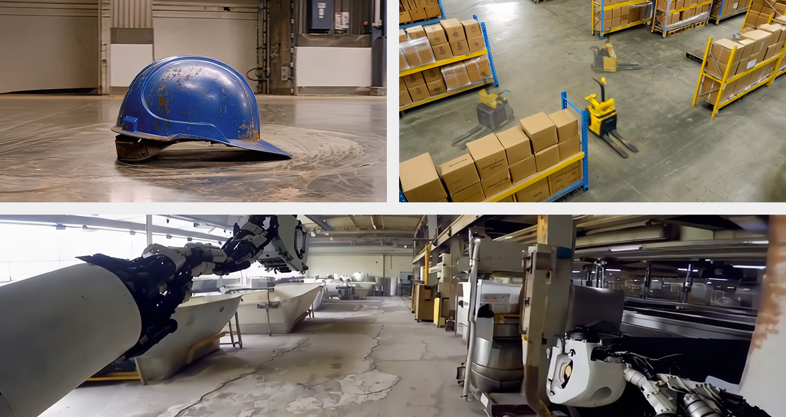
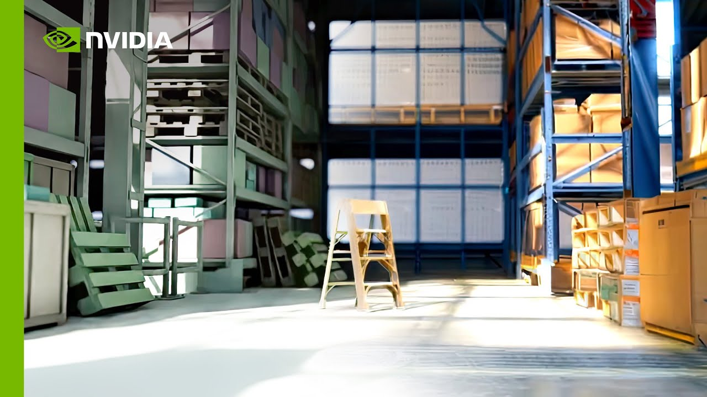

編集者注：この投稿は、CES最優秀賞の結果を反映するため、2025年1月10日（金）に更新されました。
NVIDIA Cosmosは、物理AI開発を加速するプラットフォームであり、ワールド基盤モデル（World Foundation Models）ファミリーを導入する。これは仮想環境の将来の状態を物理的に認識したビデオとして予測・生成できるニューラルネットワークであり、開発者が次世代のロボットおよび自律走行車（AV）を構築するのを支援するものだ。

ワールド基盤モデル（WFM）は、大規模言語モデルと同様に根本的な重要性を持つ。テキスト、画像、動画、動作などの入力データを使用して仮想世界を生成・シミュレーションし、シーン内のオブジェクトの空間的関係とその物理的相互作用を正確にモデル化する。
CESにて発表されたNVIDIAは、物理ベースのシミュレーションおよび合成データ生成向けにCosmosのWFMの第一弾を公開する。これには最先端のトークナイザー、ガードレール、高速化されたデータ処理・キュレーションパイプライン、モデルのカスタマイズと最適化のためのフレームワークが含まれる。
CosmosはCESを主催する米国コンシューマーテクノロジー協会のアワードパートナーであるCNETグループによる「Best of CES Awards」において、最優秀AI賞および最優秀総合賞を受賞した。
研究者や開発者は、企業規模を問わず、商業利用を許可するNVIDIAの寛容なオープンモデルライセンスのもとでCosmosモデルを自由に使用できる。AIエージェントを構築するエンタープライズ向けには、CESで発表された新しいオープン版のNVIDIA Llama NemotronモデルおよびCosmos Nemotronモデルも利用可能となった。
Cosmosの最先端モデルのオープン化により、ロボティクスおよびAV技術を構築している物理AI開発者が解放され、あらゆる規模のエンタープライズが物理AIアプリケーションをより迅速に市場投入できるようになる。開発者はCosmosモデルを直接使用して物理ベースの合成データを生成するか、NVIDIA NeMoフレームワークを活用して特定の物理AIセットアップ向けに独自の動画でモデルをファインチューニングすることができる。
物理AIのリーダー企業として、ロボティクス企業の1X、Agility Robotics、XPENGをはじめ、AV開発企業のUberやWaabiがすでにCosmosと連携してモデル開発の加速と強化に取り組んでいる。
開発者はNVIDIA APIカタログで最初のCosmosの自己回帰モデルおよび拡散モデルをプレビューし、NVIDIA NGCカタログとHugging Faceからモデルファミリーとファインチューニングフレームワークをダウンロードできる。

Cosmosのワールド基盤モデルは、物理認識型ビデオ生成のためのオープンな拡散モデルおよび自己回帰型トランスフォーマーモデルのスイートだ。これらのモデルは、実世界の人間の相互作用、環境、産業、ロボティクス、走行データの2,000万時間から得られた9,000兆トークンで学習されている。
モデルはNano、Super、Ultraの3カテゴリーに分類される。Nanoはリアルタイムの低遅延推論とエッジデプロイメントに最適化されたモデル向け、Superは高性能なベースラインモデル向け、Ultraは最高品質・最高忠実度のモデル向けで、カスタムモデルの蒸留に最適だ。
NVIDIA Omniverseの3D出力と組み合わせることで、拡散モデルは制御可能で高品質な合成動画データを生成し、ロボットおよびAV知覚モデルのトレーニングを促進する。自己回帰モデルは入力フレームとテキストに基づいて動画フレームのシーケンスで次に来るべきものを予測する。これによりリアルタイムの次トークン予測が可能となり、物理AIモデルに次の最適行動を予測する先見性を与える。
開発者はCosmosのオープンモデルをテキスト→ワールド生成および動画→ワールド生成に使用できる。拡散モデルと自己回帰モデルのバリエーション（各40億〜140億パラメーター）がNGCカタログおよびHugging Faceで現在入手可能だ。
また、テキストプロンプトの精緻化のための120億パラメーターのアップサンプリングモデル、拡張現実向けに最適化された70億パラメーターのビデオデコーダー、責任ある安全な使用を確保するためのガードレールモデルも利用可能となっている。
カスタマイズの可能性を示すために、NVIDIAはAV向けのマルチセンサービューの生成などの垂直アプリケーション向けにファインチューニング済みモデルサンプルも公開している。
Cosmosのワールド基盤モデルは、トレーニングデータセットを補強するための合成データ生成、実世界への展開前に物理AIモデルをテスト・デバッグするためのシミュレーション、AIエージェントの学習を加速するための仮想環境における強化学習を可能にする。
開発者はNVIDIA Omniverseで構成された3Dシーンによってコスモスを条件付けすることで、大量の制御可能な物理ベースの合成データを生成できる。
自律走行車からはじめて物理世界のためのジェネレーティブAIを先導するWaabiは、AV向けソフトウェア開発とシミュレーションのためのデータの検索とキュレーションにCosmosの活用を評価している。これにより同社の業界最先端の安全アプローチがさらに加速される。このアプローチは、車両が実世界と同レベルのリアリズムで遭遇しうるあらゆる状況を再現できるジェネレーティブAIシミュレーター「Waabi World」に基づいている。
ロボティクス分野では、WFMはロボット学習のためのより安価で効率的かつ制御された空間を提供する合成仮想環境やワールドを生成できる。エンボディードAIスタートアップのHillbotは、CosmosをつかってテラバイトのハイフィデリティG3D環境を生成することでデータパイプラインを強化している。このAI生成データにより同社はロボットのトレーニングと運用を改善し、産業・家庭用タスクにおけるロボットのスキルアップと性能向上を実現しようとしている。
両産業において、開発者はNVIDIA OmniverseとCosmosをマルチバースシミュレーションエンジンとして活用できる。これにより物理AIポリシーモデルが特定のタスクを実行するために取りうるすべての将来のパスをシミュレーションでき、その中から最適なパスを選択できるようになる。
Cosmosモデルのデータキュレーションとトレーニングは、高性能な完全マネージドAIプラットフォームである NVIDIA DGX Cloudを通じた数千台のNVIDIA GPUに依存していた。DGX Cloudは主要なクラウドすべてで高速コンピューティングクラスターを提供している。
Cosmosを採用する開発者はDGX Cloudを使用してCosmosモデルを簡単にデプロイでき、NVIDIA AI Enterpriseソフトウェアプラットフォームを通じてさらなるサポートも受けられる。
基盤モデルに加え、Cosmosプラットフォームには NVIDIA NeMo Curatorを利用しNVIDIAデータセンターGPU向けに最適化されたデータ処理・キュレーションパイプラインが含まれている。
ロボティクスおよびAV開発者は数百万〜数十億時間の実世界録画ビデオを収集し、ペタバイト規模のデータが生じる。CosmosはNVIDIA Hopper GPU上で2,000万時間のデータをわずか40日で処理でき、NVIDIA Blackwell GPUでは14日間にまで短縮できる。同等の消費電力のCPUシステムで最適化されていないパイプラインを使用した場合、同量のデータを処理するには3年以上かかる。
このプラットフォームには、様々なトランスフォーマーモデルのトレーニング向けに異なる動画圧縮比でビデオをトークンに変換できる強力なビデオ・画像トークナイザーのスイートも搭載されている。
Cosmosのトークナイザーは最先端手法と比較して8倍以上の総合圧縮率と12倍の処理速度を実現し、トレーニングと推論の両方において優れた品質と計算コストの削減を提供する。開発者はNVIDIAのオープンモデルライセンスのもとで提供されるこれらのトークナイザーをHugging FaceおよびGitHubから利用できる。
Cosmosを使用する開発者は、高スループットAIトレーニングを可能にするGPU加速フレームワークであるNeMoフレームワークが提供するモデルトレーニングおよびファインチューニング機能も活用できる。
NVIDIA Open Model License Agreementのもとで開発者に提供されるCosmosは、非差別性、プライバシー、安全性、セキュリティ、透明性を含むNVIDIAの信頼できるAI原則に沿って開発された。
Cosmosプラットフォームには、前処理で有害なテキストや画像の入力を軽減し、後処理で生成された動画の安全性をスクリーニングする専用モデルスイート「Cosmos Guardrails」が含まれている。開発者はカスタムアプリケーション向けにこれらのガードレールをさらに強化できる。
NVIDIA APIカタログ上のCosmosモデルには、AI生成シーケンスの識別を可能にする組み込み透かしシステムも搭載されている。
NVIDIA CosmosはNVIDIA Researchが開発した。モデル開発とベンチマークの詳細については、研究論文「Cosmos World Foundation Model Platform for Physical AI」を参照のこと。追加情報を提供するモデルカードはHugging Faceで入手可能だ。
ワールド基盤モデルについての詳細は、NVIDIAの研究担当副社長であるMing-Yu Liuが出演したAI Podcastエピソードで学ぶことができる。
NVIDIA Cosmosを今すぐ始めよう。
ステップバイステップのワークフロー、技術的なレシピ、Cosmos WFMの構築・適応・デプロイの具体的な例についてはCosmos Cookbookを訪問するか、ピアと学ぶためにコミュニティに参加しよう。